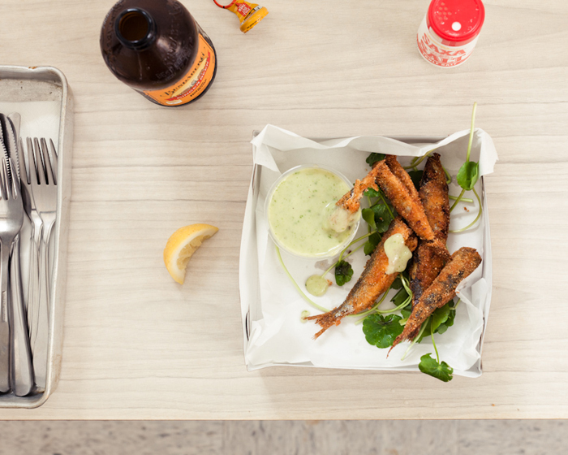

Fresh, crunchy, and absolutely magical with a beer, fried sardines are the kind of
bar snack that you would hope to run into at the end of every working week.
They’re surpassed maybe only by the anchovy wrapped in pastry. But that’s that
fella Andrew McConnell’s idea, not ours. Crunchy fish like this also deserve a
garlicky, herby coriander aioli.

If you want to clean up the sardines (it’s optional), remove the head and gut tube.
Combine the breadcrumbs with the smoked paprika, cumin, cayenne pepper
and ½ teaspoon of salt. Dust the fish in some plain flour, then in the egg wash.
Roll it in the spice mixture carefully and fry in hot vegetable oil for 2–3
minutes or until golden. Dip in some sauce and eat IMMEDIATELY.